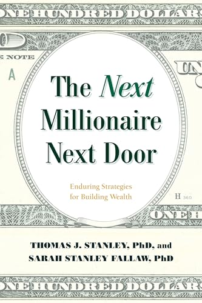

(Audio) The Next Millionaire Next Door
Tuesday December 24, 2024
It's sweet that Stanley's daughter finished this 2020 follow-up to his 1996 Millionaire Next Door after he died in 2015. There are refreshed surveys, but not a lot that's new, as far as I can tell, apart from attempts to defend the family legacy from criticism.
The core concept is still spending less money than you get. More pages are given to spending less than to getting more. Conscientiousness and discipline are emphasized. America is presented as uniquely suited to building wealth because of freedom.
One criticism of the original book was that the core thesis (that normal people can become millionaires) was an artifact of survivorship bias observed toward the end of a bull market. I didn't hear a really good response to this criticism, but I don't think it's a particularly interesting criticism either.
I think the deeper latent criticism is about what level of the system to blame. Stanley is all about the individual level. "The game is winnable!" he says. Critics, I think, are often talking about something fundamentally different. "The rules of the game are unfair!" they say. Both these things can be true at the same time.
It's easy to wag a finger at someone with a high income who's still barely making their house and car payments. But far more people have low income, not much room to cut expenses, and little opportunity to increase their income. These books have more advice for the former than the latter.
